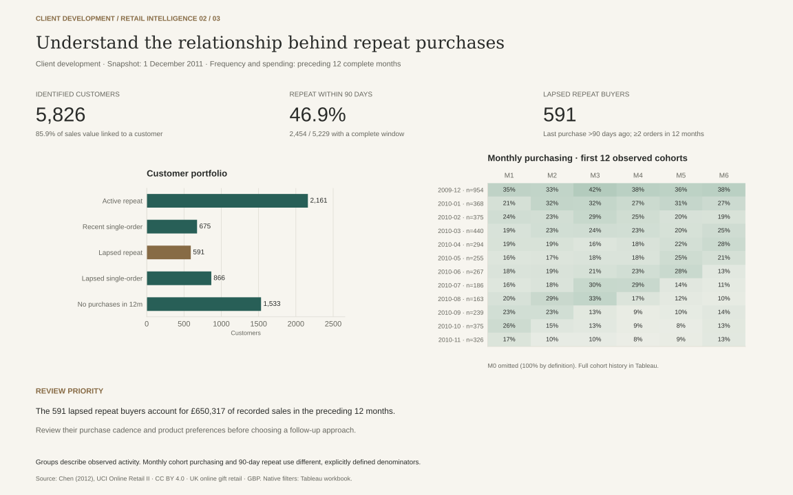
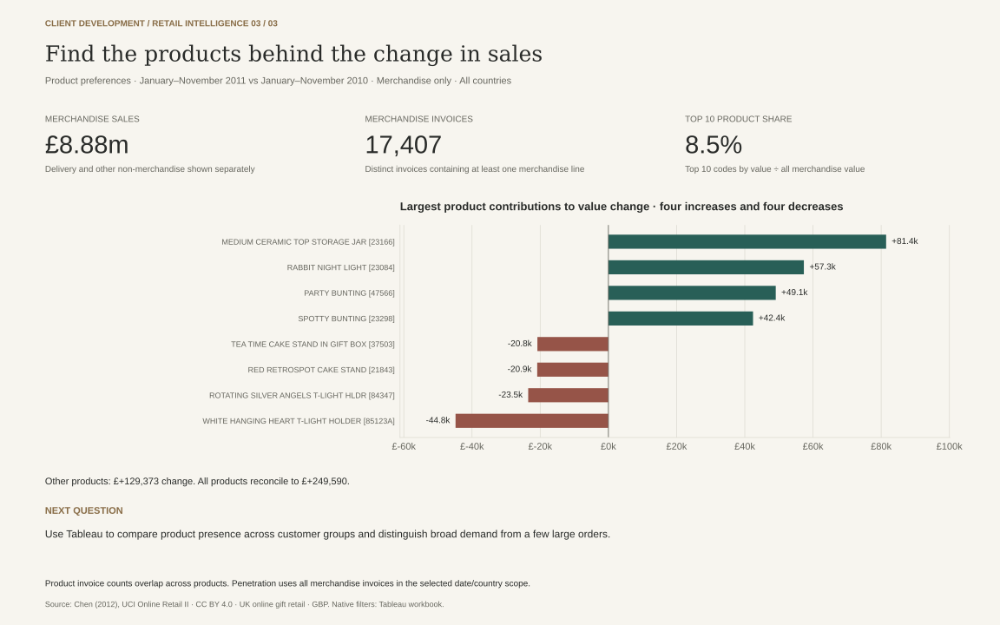

Recorded sales use eligible positive purchase lines. Cancellation amounts are shown separately. Overlapping sheets are reconciled; remaining identical rows are retained. See the methodology and sensitivity analysis.
Open full-size sales chart
Customer groups use the fixed 1 December 2011 snapshot. The 90-day repeat measure includes only buyers with a complete observation window. The preview shows six repeat months for the first twelve cohorts; Tableau includes the full cohort history.
Open full-size client-development chart
Product comparisons use January–November in both years. Merchandise excludes delivery and other non-merchandise entries. Product invoice counts overlap, so they cannot be added across products.
Open full-size product-preferences chart